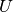
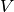

8.19.4.1. sklearn.metrics.adjusted_mutual_info_score¶
- sklearn.metrics.adjusted_mutual_info_score(labels_true, labels_pred)¶
Adjusted Mutual Information between two clusterings
Adjusted Mutual Information (AMI) is an adjustement of the Mutual Information (MI) score to account for chance. It accounts for the fact that the MI is generally higher for two clusterings with a larger number of clusters, regardless of whether there is actually more information shared. For two clusterings  and , the AMI is given as:
AMI(U, V) = [MI(U, V) - E(MI(U, V))] / [max(H(U), H(V)) - E(MI(U, V))]
This metric is independent of the absolute values of the labels: a permutation of the class or cluster label values won’t change the score value in any way.
This metric is furthermore symmetric: switching label_true with label_pred will return the same score value. This can be useful to measure the agreement of two independent label assignments strategies on the same dataset when the real ground truth is not known.
Be mindful that this function is an order of magnitude slower than other metrics, such as the Adjusted Rand Index.
Parameters : labels_true : int array, shape = [n_samples]
A clustering of the data into disjoint subsets.
labels_pred : array, shape = [n_samples]
A clustering of the data into disjoint subsets.
Returns : ami: float :
score between 0.0 and 1.0. 1.0 stands for perfectly complete labeling
See also
- adjusted_rand_score
- Adjusted Rand Index
- mutual_information_score
- Mutual Information (not adjusted for chance)
References
[R88] Vinh, Epps, and Bailey, (2010). Information Theoretic Measures for Clusterings Comparison: Variants, Properties, Normalization and Correction for Chance, JMLR [R89] Wikipedia entry for the Adjusted Mutual Information Examples
Perfect labelings are both homogeneous and complete, hence have score 1.0:
>>> from sklearn.metrics.cluster import adjusted_mutual_info_score >>> adjusted_mutual_info_score([0, 0, 1, 1], [0, 0, 1, 1]) 1.0 >>> adjusted_mutual_info_score([0, 0, 1, 1], [1, 1, 0, 0]) 1.0
If classes members are completly splitted across different clusters, the assignment is totally in-complete, hence the AMI is null:
>>> adjusted_mutual_info_score([0, 0, 0, 0], [0, 1, 2, 3]) 0.0